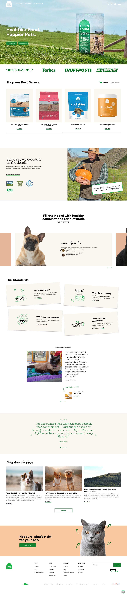
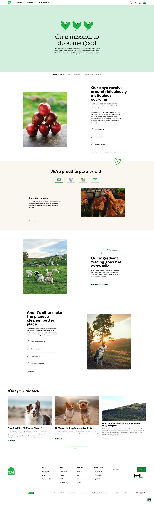

Open Farm has brought their mission to create more nutritious and ethically sourced pet food to life using a brand story rooted in their origins and beliefs. We focused on creating a digital experience that honored their vision, and sat firmly at the intersection of product-centric and brand-driven. Because when people make emotional connections with a brand's story, they've taken that first step towards clicking "Buy".
Putting the user first, we designed an integrated shopping process that feels both accessible and contextual. We focused on streamlining the user journey so customers could easily progress from learning about the brand and its different lines of foods, to making the right purchase for their pet.
